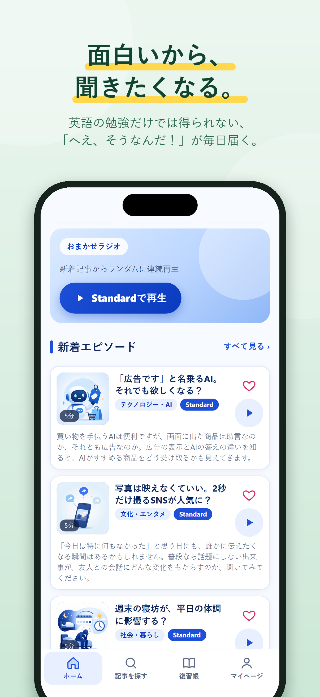
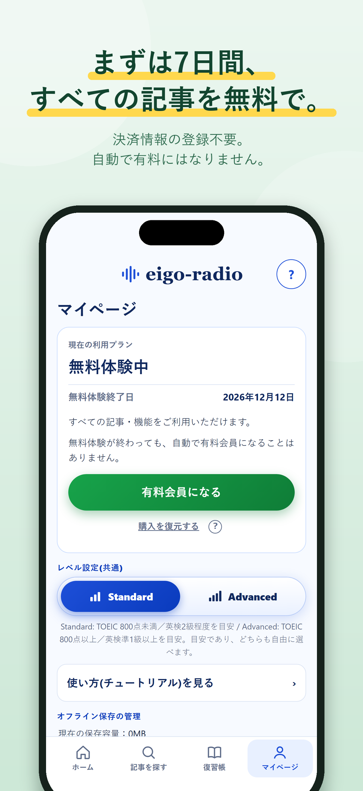

6枚(6枚目は案A・案Bの2案)。1206x2622 px・PNG・アルファなし(Apple「iPhone with Dynamic Island (medium display)」の必須サイズ)。撮影元=アプリ同梱Web層の最新版(Web build b7bffa21ca20)+iOS会員UIの再現(Playwright)。実機・シミュレーター撮影ではありません。
ご確認いただきたいこと: (1) 6枚目は案Aと案Bのどちらにするか(案Bを推奨) (2) 3枚目は、題名・サムネイルを「夫が妻の姓を選ぶとき、それぞれの声」(Family Y2の新構成版)にした画像です。この記事を実際の記事一覧へ掲載する(別のご承認)までは、ストアに出せません。 App Store Connectへの登録・提出はまだ行っていません。

